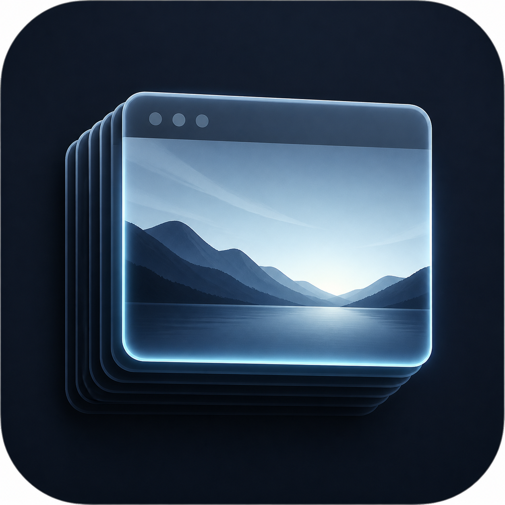
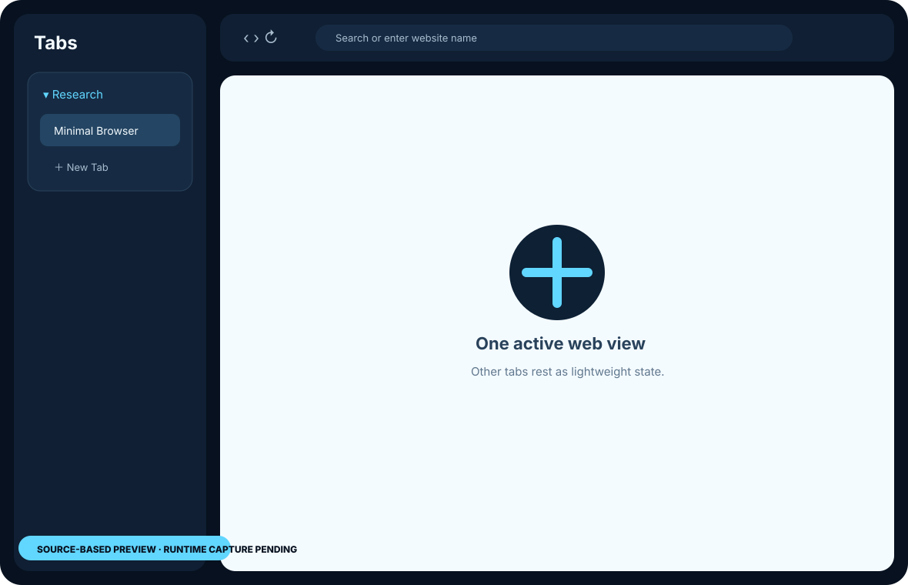

Grouped browsing
Organize tabs into groups and restore your workspace without keeping every page active.

macOS 14+A focused macOS browser that groups work, restores reading state, and keeps only one live web view in memory.
The product mark and layout preview are release-draft assets. Final App Store artwork and runtime capture remain subject to release acceptance.

Organize tabs into groups and restore your workspace without keeping every page active.
App state and website data remain on your Mac. The developer operates no browsing backend.
Closing a tab removes its isolated website store while shared sign-in cookies remain under your control.